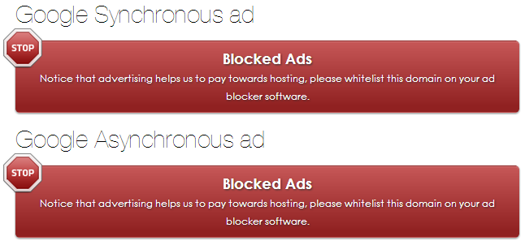
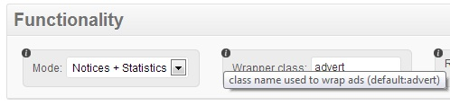

BAN - Blocked Ads Notifier Lite 1.0
For WordPress 3.5+
- created: 10/19/2013
- latest update: 10/19/2013
- by: Plugarized
- email: lite@plugarized.com
Thank you for downloading our plugin, please find below a quick start guide that will get you up and running in a few minutes! WOULD YOU LIKE TO GO PREMIUM!
How Ad blocking extensions work.
Adblock, Adblock Plus, Ghostery and other similar extensions works by blocking elements from your web page which have been identified as advertisement, these extensions can stop javascript, stylesheets, images and even flash from loading and go as far as modifying the elements on your website by hiding them just to stop your advertisement getting to your end users.
Ad blocking = Lost revenue
Blocked Ads Notifier for WordPress
Our premium plugin works by detecting when advertisement is missing from your web page, this is achieved by calculating the size of the ad space container, confirming the existence of expected elements or checking if advertisement iframes are hidden or have been deleted.
What happens next?
Currently, our plugin aims to display notices to users who are found to be ad blocking, there are two types;
Multiple notices: this method aims to fill in all empty spaces left by ad adblocking and replace it with our notice.

Floating notice: display a single floating notice to the user. (PREMIUM FEATURE)
Basic set up
Blocked Ads Notifier Lite needs to identify all the different ad zones within your website in order to perform ad block detection as well as displaying multiple notices, please perform the following steps to set up the plugin.
Step 1: Wrap each ad zone on your website with a div container and give it a class, note that they all must use the same class.
<div class="advert"> //your ad code 1 </div>
<div class="advert"> //your ad code 2 </div>
Step 2: Go to plugin settings, on "functionality/wrapper class" type in the exact name of the chosen class (case-sensitive).
Note: by default the wrapper class is "advert" however you are advised to change this to your liking.

(MODE AVAILABLE ON PREMIUM)
Settings
This section will briefly explain the various settings provided by Blocked Ads Notifier
Functionality
1. Mode: show notices & gather statistics or only statistics mode (choices: Notices&Statistics/Statistics)(default: notices+stats)(PREMIUM FEATURE)
2. Wrapper Class: element class name used to wrap ad zones (default: advert)
3. Registered Users: display notice to logged users (choices: Yes/No)(default: Yes)
4. Statistics Data: choose to keep or delete statistics data upon plugin removal/deactivation (choices: Yes/No)(default: Yes)(PREMIUM FEATURE)
Notice Type
1. Multiple: notice type, displays notice on each detected ad blocked space (default)
2. Method: method used for inserting notices to the page (default: Wrap)
- Append: Inserts notice at the end of each ad zone wrapper.
- Prepend: Inserts notice at the top of each ad zone wrapper.
- Wrap: Wraps notice around each ad zone wrapper.
- Parent: Wraps notice to parent of ad zone wrapper ( literal value: parent().parent.wrap() )
5. Floating: notice type, display single floating notice.(PREMIUM FEATURE)
6. Cookie Expiry: sets the number of days the notice should stay hidden upon closing, the user will see the notice again as soon as the cookie expires or the browser cache is cleared.(PREMIUM FEATURE)
Content
1. Notification Title: sets notice title.
2. Message: sets notice message.
Style
1. Notification Image URL: corner image used on notices, size: 50x50 pixels.
2. Background: notice background color.
3. Border Radius: sets round borders to notice.
Special Features
Statistics(PREMIUM FEATURE)
By default, statistics are enabled both on plugin settings and admin dashboard, it's a great way of knowing more about your users.
Class Randomization(PREMIUM FEATURE)
To prevent end users from supressing the notices, each ad zone wrapper is given random classes on each page refresh.
Ad blocking prevention
Ad blockers can block external styles and javascript from loading, to circumvent this issue, styles and javascript is printed on the page.
inline css
inline js
Compatibility
Cross-browser
Blocked Ads notifier has been tested with the latest versions of Firefox, Chrome, Safari, Opera and Internet Explorer 9/10;
Cache
Our plugin works in harmony with major cache plugins, we have run tests on W3 Total Cache and WP Super Cache.

Ad blocker extensions
Tested with the most popular up to date ad blocking extensions: Adblock Plus, Adblock and Ghostery;